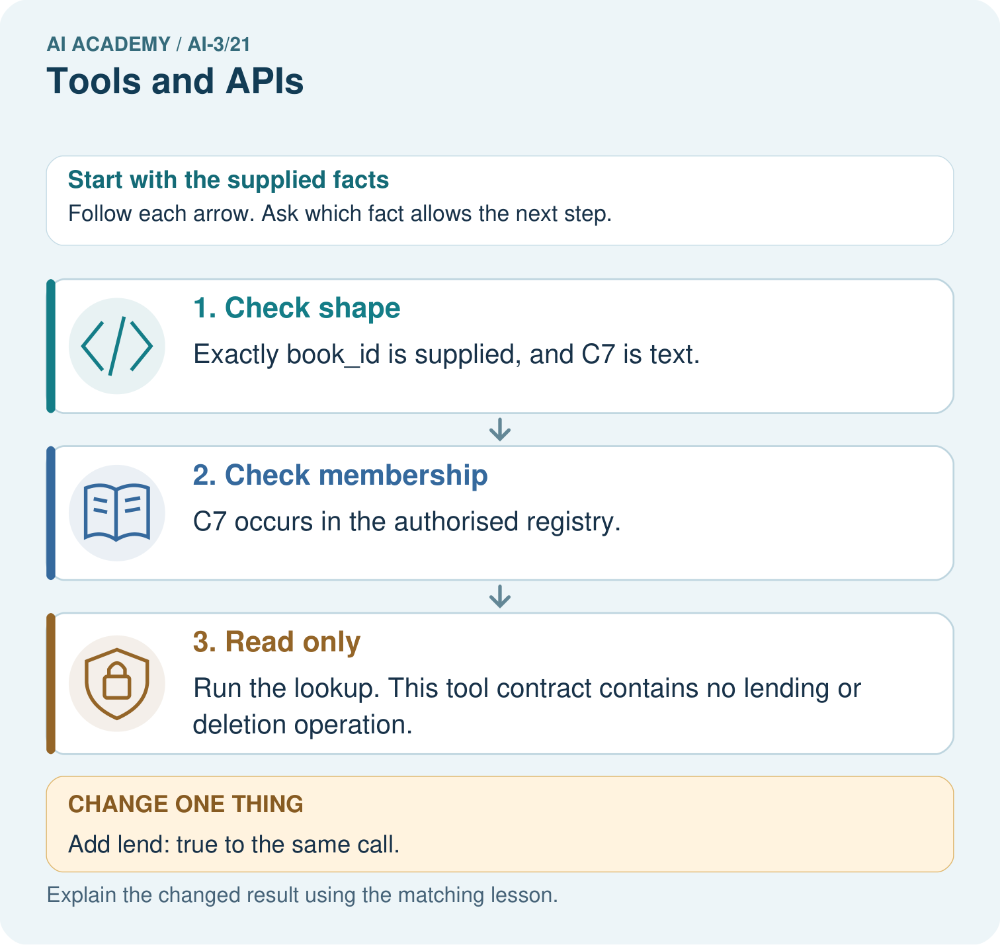
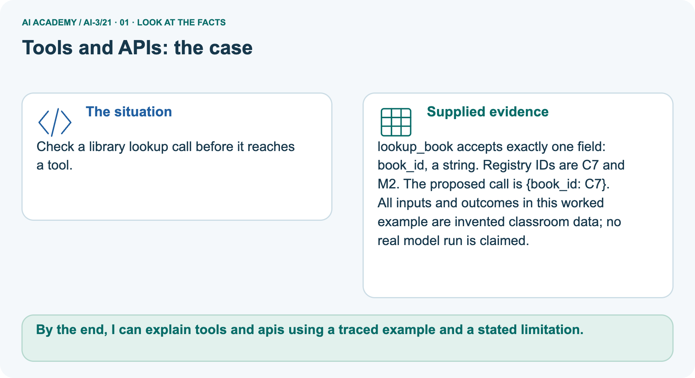
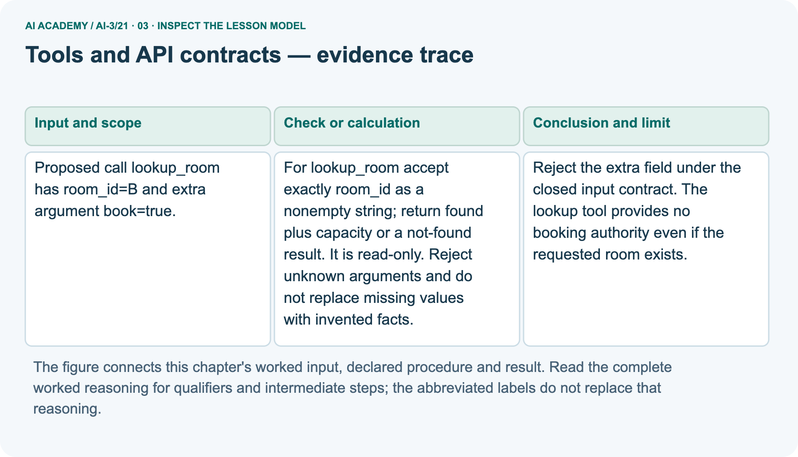
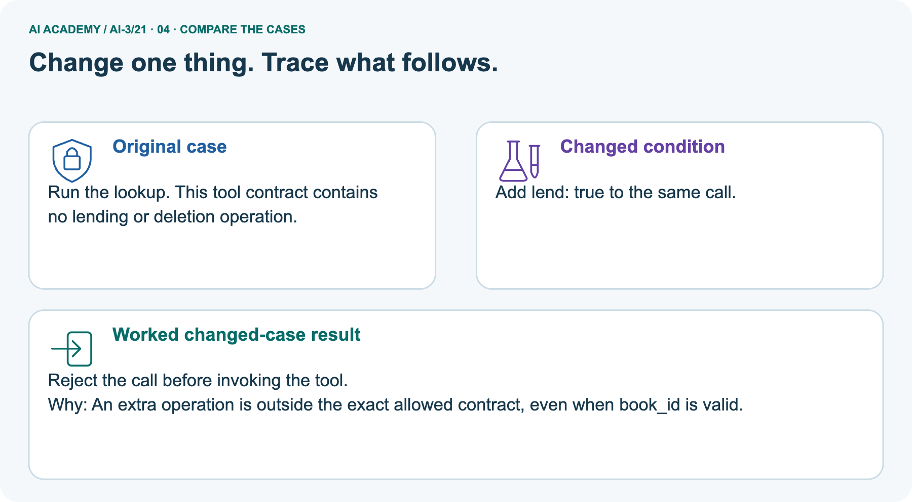
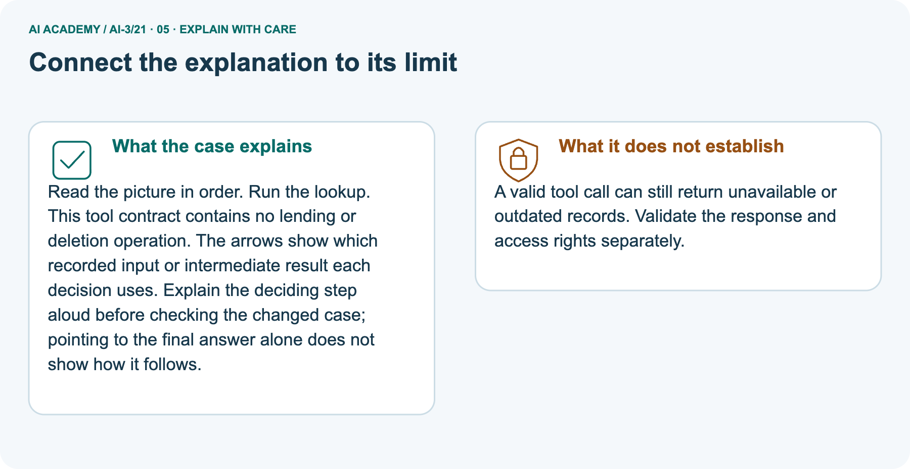
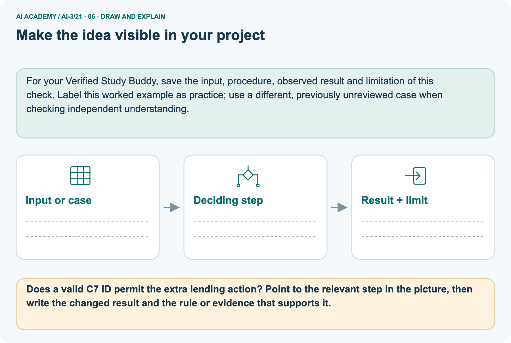

AI Academy · Level 3 · Grade 8 · Week 21 · Workbook
Tools and APIs
Learn to understand, design, build, test and explain AI systems responsibly.
Project: Verified Study Buddy
THE CONNECTED WEEK
One connected tool-contract record.
Explain the interface, trace an invalid call, audit a guarantee and design a revealing failure case.
Keep one habit: Keep exact fields, object identity, operation scope and failure status together.
Main lesson · Section 1
Recall: reconnect earlier ideas
Retrieve before opening notes.
Retrieve and explain
Try the recall before opening notes. Then use a different colour or a labelled second line to correct your explanation.
Without opening the old lesson, explain one key idea from Conversation State and Memory. Give an example and a mistake that the idea helps you avoid.
Without opening the old lesson, explain one key idea from Retrieval Augmented Generation. Give an example and a mistake that the idea helps you avoid.
Without opening the old lesson, explain one key idea from Source Quality. Give an example and a mistake that the idea helps you avoid.
Earlier wording, alternatives and picture transcripts
Conversation State and Memory
Retrieval Augmented Generation
Source Quality
Main lesson · Section 12
W1 · Explain the tool contract
Separate proposed call, permitted execution and checked result.
Your evidence record
Room practice contract: exactly room_id as nonempty text, read-only, no extra fields. B capacity 12; Z measured capacity 0; other IDs absent. found=true needs matching ID and integer capacity>=0; found=false has no capacity measurement. Only transient timeout allows a second total attempt; stop after two. Separate book request uses book_id text, registry C7/M2, no lending/deletion.
Diagram object notation is shorthand, not strict JSON.
Reference for this exercise: open this week’s student lesson, “Tools and APIs”, at “See how it works” and “Follow a worked example”. Use the original worked values or code named in the question; the later pictorial case is a separate example. Keep this reference beside your workbook while practising.
Explain the weekly mechanism in your own words. Use the worked scenario to name its input, decision rule and output.
Main lesson · Section 13
W2 · Trace the extra-field request
Reject outside-contract actions before invocation.
Your evidence record
Room practice contract: exactly room_id as nonempty text, read-only, no extra fields. B capacity 12; Z measured capacity 0; other IDs absent. found=true needs matching ID and integer capacity>=0; found=false has no capacity measurement. Only transient timeout allows a second total attempt; stop after two. Separate book request uses book_id text, registry C7/M2, no lending/deletion.
Diagram object notation is shorthand, not strict JSON.
Proposed call lookup_room has room_id=B and extra argument book=true. Show the intermediate steps and give the conclusion with its scope.
Main lesson · Section 14
W3 · Audit a tool-success guarantee
Success for one read-only operation is not broader authority.
Your evidence record
Room practice contract: exactly room_id as nonempty text, read-only, no extra fields. B capacity 12; Z measured capacity 0; other IDs absent. found=true needs matching ID and integer capacity>=0; found=false has no capacity measurement. Only transient timeout allows a second total attempt; stop after two. Separate book request uses book_id text, registry C7/M2, no lending/deletion.
Diagram object notation is shorthand, not strict JSON.
A report omits this qualification: A successful tool result supports only its declared data and operation; it does not authorise subsequent side effects.
Explain how omitting it could change a reader's interpretation, and write an accurate replacement.
Main lesson · Section 16
W5 · Design a revealing tool case
Supply exact request, response or timeout sequence and predicted outcome.
Your evidence record
Room practice contract: exactly room_id as nonempty text, read-only, no extra fields. B capacity 12; Z measured capacity 0; other IDs absent. found=true needs matching ID and integer capacity>=0; found=false has no capacity measurement. Only transient timeout allows a second total attempt; stop after two. Separate book request uses book_id text, registry C7/M2, no lending/deletion.
Diagram object notation is shorthand, not strict JSON.
Reference for this exercise: open this week’s student lesson, “Tools and APIs”, at “See how it works” and “Follow a worked example”. Use the original worked values or code named in the question; the later pictorial case is a separate example. Keep this reference beside your workbook while practising.
For the worked scenario, propose one additional case that could reveal a failure, describe its expected outcome before running it, and explain what would need to remain fixed for a fair comparison.
Do not reuse W4 as a new final test after receiving feedback.
Main lesson · Section 4
W4 · Validate the fresh K room calls independently
Keep one first attempt before hints or feedback.
Read and explain independently
Apply the same room input contract: exactly room_id as a nonempty string; extra fields are rejected before invocation. Treat the K values in the task’s shorthand as text. K is absent from the registry. No real API, deletion capability or capacity measurement for K is supplied.
Tool accepts room_id string. Calls are {room_id:7}, {room_id:K} and {room_id:K, delete:true}. Validate; K is absent from the registry.
Keep a fair record
Attempt this case before feedback. Record any help. Earlier examples below are further practice; a case already practised with feedback cannot establish fresh transfer.
Earlier wording, alternatives and picture transcripts
Independent case: Apply a new case independently
Main lesson · Section 9
Project · Keep the decision and its evidence
Add this week’s change to your existing project record.
Your evidence record
Allow only retrieval and calculator tools with validated arguments and visible results.
The project change and evidence I will keep
Main lesson · Section 17
Feedback · Repair and return
Keep the first attempt, the repair and a changed-case return.
Your evidence record
| Evidence | My record |
|---|---|
| Worked alone / hint / model | |
| First step I repaired and why | |
| New case checked later; date and result | |
| What I can now explain without notes | |
| One remaining question |
Revisit this idea with your teacher after a delay. Familiarity is different from explaining and using it on a changed case.
Main lesson · Section 10
Finish · Judge the evidence in your work
Point to work that supports your confidence level.
Your evidence record
- I can explain the mechanism.
- I can show evidence.
- I can handle a changed case.
- I can name a limit.
Mark each as not yet, with help or independently, and attach supporting work.
Teacher review ____________________ Next step ____________________
Reference bank and extra practice
Choose the reference that helps your next step.
Reference · Supported W2 record
Reference · Section 2
Reference · Supported W2 record
This is the same W2 attempt. Keep one response record.
Use this when helpful
Use W2: Trace the worked case for Tools and API contracts. Record the answer once; the lesson and workbook refer to the same attempt.
| Given inputs | Procedure I chose | Middle steps | Result and check |
|---|---|---|---|
Extra practice · Repair the explanation
Reference · Section 3
Extra practice · Repair the explanation
Explain the deciding fact before discussing the answer.
Use this when helpful
Use the worked case for Tools and API contracts. Proposed explanation: “The worked result establishes every future case”. Decide whether this explanation is supported.
Point to the step or supplied fact that decides; explain your repair if needed.
Reference · Original learning target
Reference · Section 5
Reference · Original learning target
Use this target to inspect an explanation.
Use this when helpful
A tool can calculate or search supplied notes. The request is 'What is 17×6, and where do roots take up water?' Assign each subtask and describe output checks.
Extra practice · A complete case
Reference · Section 6
Extra practice · A complete case
Try the question before checking the worked explanation.
Use this when helpful
An assistant has calculator and source-search tools. Request: 12 times 9 and habitat definition from a class pack.
Choose and verify tools.
Show your trace, calculation or evidence
Extra practice · A changed case
Reference · Section 7
Extra practice · A changed case
Keep this practice separate from the reserved independent attempt.
Use this when helpful
A tool can look up book availability and also place an order. The user asks only whether a book is available. Which action is authorized?
My practice answer and reason
Week 21 Test and reflect
Extra practice · Design a revealing test
Reference · Section 8
Extra practice · Design a revealing test
Predict before tracing or testing.
Use this when helpful
Create a changed input, boundary case or missing-information case. Write the expected answer or safe response before testing.
| Test record | My evidence |
|---|---|
| Changed input or condition | |
| Expected answer or fallback | |
| Observed result | |
| Why the result occurred |
Reference · Original target response space
Reference · Section 11
Reference · Original target response space
This teaching case is practice rather than a fresh assessment.
Use this when helpful
A tool can calculate or search supplied notes. The request is 'What is 17×6, and where do roots take up water?' Assign each subtask and describe output checks.
Record support used: none, hint or teacher explanation.
Reference · Independent-case response copy
Reference · Section 15
Reference · Independent-case response copy
This duplicates W4. Reuse the same first-attempt record.
Use this when helpful
Tool accepts room_id string. Calls are {room_id:7}, {room_id:K} and {room_id:K, delete:true}. Validate; K is absent from the registry.
Extra practice · Use the worked picture
Reference · Section 18
Extra practice · Use the worked picture
Keep the explanation and the support you used.
Use this when helpful
Check a library lookup call before it reaches a tool.
lookup_book accepts exactly one field: book_id, a string. Registry IDs are C7 and M2. The proposed call is {book_id: C7}.
All inputs and outcomes in this worked example are invented classroom data; no real model run is claimed.



Does a valid C7 ID permit the extra lending action? Point to the relevant step in the picture, then write the changed result and the rule or evidence that supports it.
Support used: alone / hint / worked example. This record is practice evidence.
Project connection: For your Verified Study Buddy, save the input, procedure, observed result and limitation of this check.
Label this worked example as practice; use a different, previously unreviewed case when checking independent understanding.
Reference · Project portfolio record
Reference · Section 19
Reference · Project portfolio record
Extend your main project response when helpful.
Use this when helpful
Project: Verified Study Buddy
Current milestone: Evaluate and revise. Compare with your starting method, explain errors and record a justified revision.
For your Verified Study Buddy, save the input, procedure, observed result and limitation of this check.
Label this worked example as practice; use a different, previously unreviewed case when checking independent understanding.
| Evidence to keep | My record |
|---|---|
| This week’s input and deciding step | |
| Prediction and actual result (or labelled paper trace) | |
| One change since the previous checkpoint and why | |
| One error or limit and the next test |
Extra practice: pictures, repair and feedback
Reference · Section 20
Extra practice: pictures, repair and feedback
Attempt each question before opening its explanation. Use one browser or paper copy.
First supported question
Check a library lookup call before it reaches a tool.
Which labelled step matches this detail? Run the lookup. This tool contract contains no lending or deletion operation.
1. Check shape
2. Read only
3. Check membership
Hint if needed: Read the steps in the pictorial case. Match the supplied detail to the stage that performs or records it.
After your attempt, compare with the supported explanation: Read only Run the lookup. This tool contract contains no lending or deletion operation. Read the picture in order. Run the lookup.
This tool contract contains no lending or deletion operation. The arrows show which recorded input or intermediate result each decision uses.
Explain the deciding step aloud before checking the changed case; pointing to the final answer alone does not show how it follows.
Practice 1: explain the deciding evidence
Check the first explanation
Practice 2: explain the deciding evidence
Changed-case question
Changed-case practice: Add lend: true to the same call. Which conclusion is supported by the supplied facts?
1. This one example guarantees correct results for every future input.
2. Reject the call before invoking the tool.
3. We can decide the result without examining the changed input or the procedure.
Hint if needed: Use the changed condition and the deciding step in the pictorial trace. The answer must say what follows from those facts.
After your attempt, compare with the supported explanation: Reject the call before invoking the tool. An extra operation is outside the exact allowed contract, even when book_id is valid.
Check the changed case
Repair a missing building block
Repair and save your work
Review Conversation State and Memory (ai-3/20). Goal: Explain the mechanism and terminology of conversation state and retention. Short practice: What is selected_book after the correction and after exit?
Point to the relevant step in the picture, then write the changed result and the rule or evidence that supports it.. Return to this week and explain what you changed.
Review Retrieval Augmented Generation (ai-3/18). Goal: Explain the mechanism and terminology of building a grounded answer. Short practice: Which part of the source supports a two-minute melting claim?
Point to the relevant step in the picture, then write the changed result and the rule or evidence that supports it.. Return to this week and explain what you changed.
Review Source Quality (ai-3/15). Goal: Explain the mechanism and terminology of conflicting and time-sensitive sources. Short practice: Which source fields must be checked before answering day 9?.
Return to this week and explain what you changed.
Use Download completed work in the hosted lesson to export your answers, reflections, practice feedback and code-run evidence. Open the HTML copy to read or print it.
Drafts stay in this browser when storage is available; clear drafts on a shared device.
Earlier wording, alternatives and picture transcripts
Use this supported practice once, in the browser or on paper. Keep the reserved independent assessment for a separate first attempt before teacher feedback.
Keep your completed work
Reference · Six-picture response sheets
Reference · Section 21
Reference · Six-picture response sheets
Choose the image that helps rather than repeating all six.
01. Tools and APIs: the case



Check a library lookup call before it reaches a tool. Supplied facts: lookup_book accepts exactly one field: book_id, a string. Registry IDs are C7 and M2. The proposed call is {book_id: C7}.
All inputs and outcomes in this worked example are invented classroom data; no real model run is claimed.
Point to the given fact that matters most. Explain why it matters.
02. Follow the deciding steps


Check shape: Exactly book_id is supplied, and C7 is text. → Check membership: C7 occurs in the authorised registry. → Read only: Run the lookup. This tool contract contains no lending or deletion operation.
Point to each numbered stage and explain which recorded input it uses.
03. Tools and API contracts — evidence trace



Tools and API contracts — evidence trace. Proposed call lookup_room has room_id=B and extra argument book=true. | For lookup_room accept exactly room_id as a nonempty string; return found plus capacity or a not-found result.
It is read-only. Reject unknown arguments and do not replace missing values with invented facts. | Reject the extra field under the closed input contract.
The lookup tool provides no booking authority even if the requested room exists.
Read the labels and values. Explain the relationship the model shows.
04. Change one thing. Trace what follows.



Original case: Run the lookup. This tool contract contains no lending or deletion operation. Changed condition: Add lend: true to the same call. Expected result: Reject the call before invoking the tool.
Reason: An extra operation is outside the exact allowed contract, even when book_id is valid.
Predict before checking the worked changed-case result. Name what changed and what the supplied facts allow you to conclude.
05. Connect the explanation to its limit



Read the picture in order. Run the lookup. This tool contract contains no lending or deletion operation. The arrows show which recorded input or intermediate result each decision uses.
Explain the deciding step aloud before checking the changed case; pointing to the final answer alone does not show how it follows. Limit: A valid tool call can still return unavailable or outdated records.
Validate the response and access rights separately.
Explain the case, then point to a limit on the claim.
06. Make the idea visible in your project



For your Verified Study Buddy, save the input, procedure, observed result and limitation of this check.
Label this worked example as practice; use a different, previously unreviewed case when checking independent understanding. Draw your input, deciding step, result and limit.
Supported question: Does a valid C7 ID permit the extra lending action? Point to the relevant step in the picture, then write the changed result and the rule or evidence that supports it.
Draw your project trace and justify the deciding step using evidence.